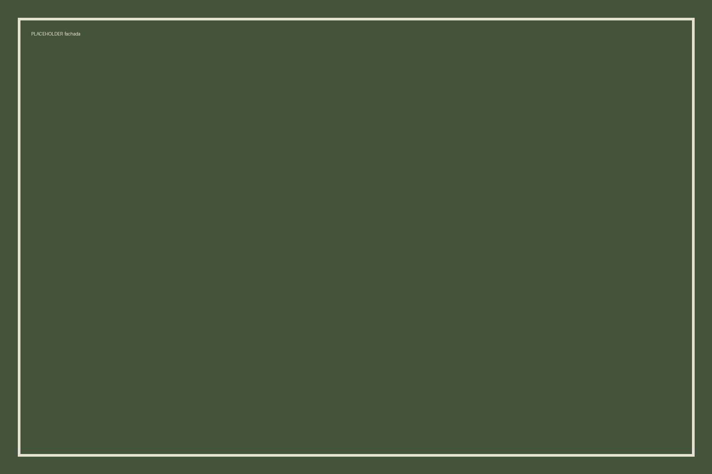
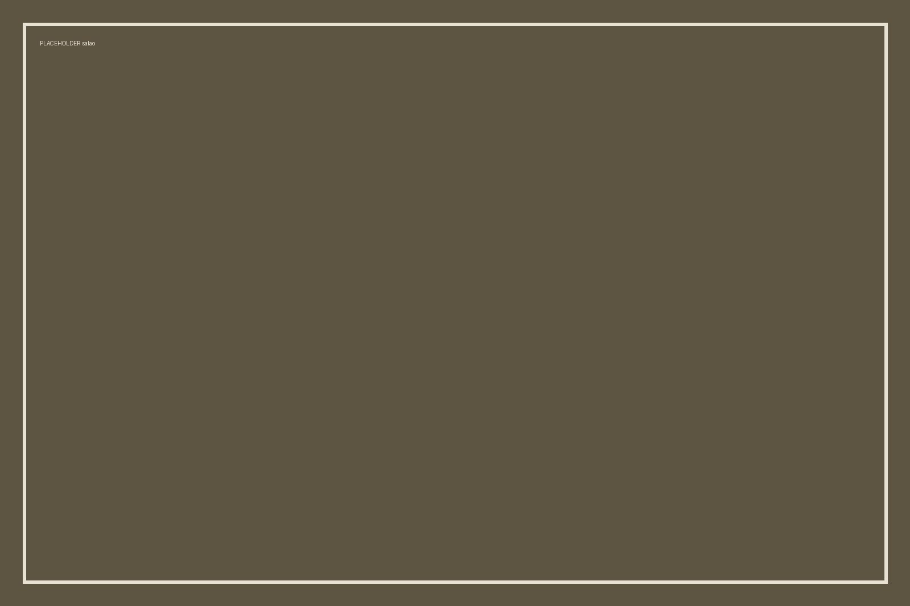
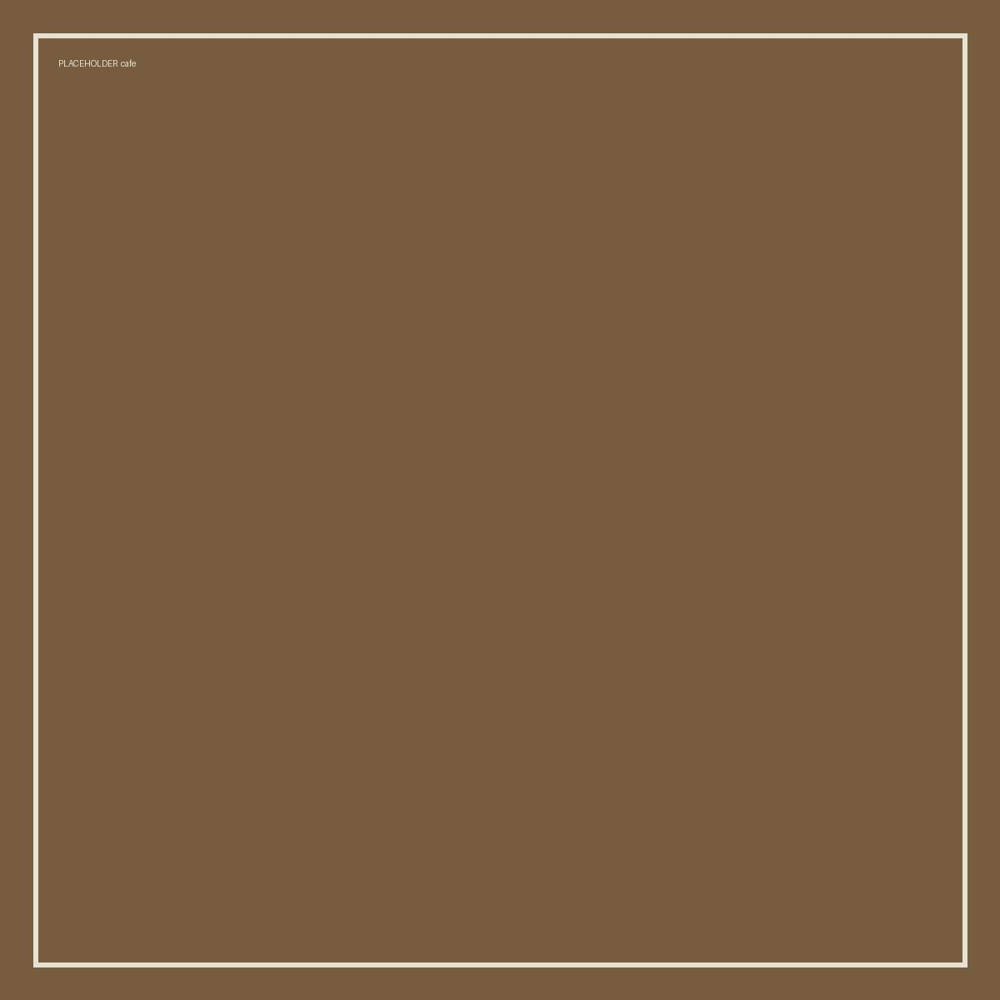

Café Botânica
Um café de bairro, com mesa para ficar.
Fica na esquina da praça, em Votuporanga.
Fale conosco no WhatsAppO que é o Café Botânica
O Café Botânica abriu em 2021 numa casa antiga do bairro. São oito mesas, wi-fi, e ninguém vai te apressar. O café é torrado aqui na região e o bolo é feito toda manhã.

Cardápio
- Café coado
- Café expresso
- Bolo do dia
- Pão na chapa
O espaço


Como chegar e horário
Endereço: [A DEFINIR]
Telefone: [A DEFINIR]
Horário: [A DEFINIR]